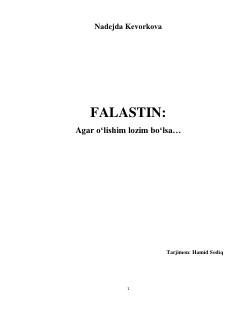

FAFalastin xalqining kundalik hayoti va kurashi haqidagi ta'sirli reportajlar to'plami.
Ushbu kitob Falastin xalqining kundalik hayoti, Isroil-Falastin mojarosi va mintaqadagi og‘ir vaziyat haqidagi reportajlar hamda qaydlardan iborat. Muallif Nadejda Kevorkova G‘azo, Quddus va G‘arbiy sohil aholisining azob-uqubatlari hamda ularning taslim bo‘lmasdan ko‘rsatayotgan qarshiliklarini yoritib beradi.